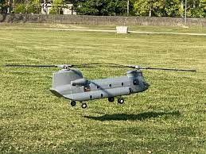
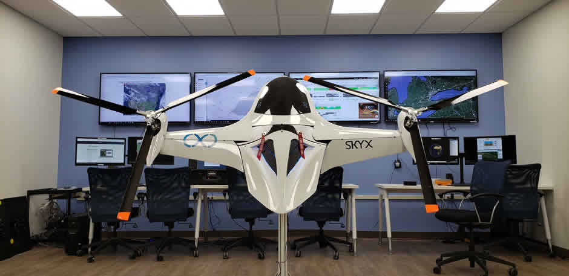
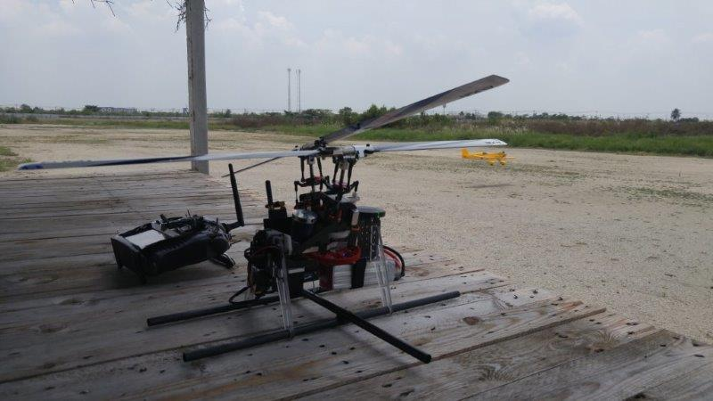
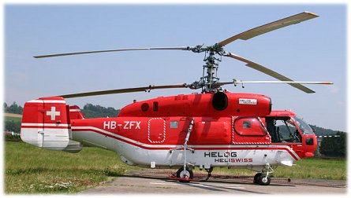

Dual Helicopter¶
Note
Dual Heli Frame requires a traditional helicopter as the base firmware. It is available for download from the firmware server. When Copter is generated for the firmware server, it generates both multirotor and traditional helicopter (with -heli suffix) firmware.
Connecting and Configuring¶
the motor’s ESC should be connected to the autopilot’s channel 8 output
traditional helicopter firmware should be loaded onto the vehicle.
FRAME_CLASS to 11 (Heli_Dual)
Similar to a traditional helicopter an auxiliary switch should be set to “Motor Interlock” to turn on/off the motor. Normally this is channel 8 so you could set RC8_OPTION to 32.
Note
See Traditional Helicopter – Swashplate Setup for basic information on how to setup each swashplate using the parameters below.
Tandem (Longitudinal)¶
{kind=link}
This setup assumes that the forward rotor swashplate is controlled by servo output 1, 2, and 3 and the aft rotor swashplate is controlled by servo output 4, 5 and 6.
Parameter Settings:
H_DUAL_MODE - Set to 0 for the longitudinal configuration
H_DCP_SCALER - Scales the differential collective output to the rotors for a pitch axis input
H_DCP_YAW - Feedforward input to yaw axis for pitch axis (DCP) inputs
H_YAW_SCALER - Scales the differential lateral cyclic based on yaw axis input. This is a positive number for this setup.
H_COL_MAX- PWM for maximum collective pitch on forward rotor head that corresponds to H_COL_ANG_MAX
H_COL_MIN - PWM for minimum collective pitch on forward rotor head that corresponds to H_COL_ANG_MIN
H_SW_TYPE - Swashplate type for forward rotor head
H_SW_COL_DIR - Swashplate collective direction for forward rotor head
H_SW_LIN_SVO - Enables linear servo feature for forward rotor head
H_COL2_MIN - PWM for minimum collective pitch on aft rotor head that corresponds to H_COL_ANG_MIN
H_COL2_MAX- PWM for maximum collective pitch on aft rotor head that corresponds to H_COL_ANG_MAX
H_SW2_TYPE - Swashplate type for aft rotor head
H_SW2_COL_DIR - Swashplate collective direction for aft rotor head
H_SW2_LIN_SVO - Enables linear servo feature for aft rotor head
H_DCP_TRIM - Removes pitch I term bias due to center of gravity offsets or discrepancies between rotors in swashplate setup. If pitch axis has I term bias while hovering in calm winds, use value of bias in DCP_TRIM to re-center I term.
These are only needed for the forward swashplate if H_SW_TYPE is set to H3 Generic.
H_SW_H3_ENABLE - Do Not Set Manually! This is set automatically once H_SW_TYPE is set to H3 Generic
These are only needed for the aft swashplate if H_SW2_TYPE is set to H3 Generic.
H_SW2_H3_ENABLE - Do Not Set Manually! This is set automatically once H_SW2_TYPE is set to H3 Generic
This parameter is not used for the longitudinal configuration - H_YAW_REV_EXPO
Side-by-Side (Transverse)¶
{kind=link}
This setup assumes that the left rotor swashplate is controlled by servo output 1, 2, and 3 and the right rotor swashplate is controlled by servo output 4, 5 and 6.
Parameter Settings:
H_DUAL_MODE - Set to 1 for the transverse configuration
H_DCP_SCALER - Scales the differential collective output to the rotors for a roll axis input
H_DCP_YAW - Feedforward input to yaw axis for roll axis (DCP) inputs
H_YAW_SCALER - Scales the differential longitudinal cyclic based on yaw axis input. This is a positive number for this setup.
H_COL_MAX- PWM for maximum collective pitch on left rotor head that corresponds to H_COL_ANG_MAX
H_COL_MIN - PWM for minimum collective pitch on left rotor head that corresponds to H_COL_ANG_MIN
H_SW_TYPE - Swashplate type for left rotor head
H_SW_COL_DIR - Swashplate collective direction for left rotor head
H_SW_LIN_SVO - Enables linear servo feature for left rotor head
H_COL2_MIN - PWM for minimum collective pitch on right rotor head that corresponds to H_COL_ANG_MIN
H_COL2_MAX- PWM for maximum collective pitch on right rotor head that corresponds to H_COL_ANG_MAX
H_SW2_TYPE - Swashplate type for right rotor head
H_SW2_COL_DIR - Swashplate collective direction for right rotor head
H_SW2_LIN_SVO - Enables linear servo feature for right rotor head
H_DCP_TRIM - Removes roll I term bias due to center of gravity offsets or discrepancies between rotors in swashplate setup. If roll axis has I term bias while hovering in calm winds, use value of bias in DCP_TRIM to re-center I term.
These are only needed for the left swashplate if H_SW_TYPE is set to H3 Generic.
H_SW_H3_ENABLE - Do Not Set Manually! This is set automatically once H_SW_TYPE is set to H3 Generic
These are only needed for the right swashplate if H_SW2_TYPE is set to H3 Generic.
H_SW2_H3_ENABLE - Do Not Set Manually! This is set automatically once H_SW2_TYPE is set to H3 Generic
This parameter is not used for the longitudinal configuration
Intermeshing¶
{kind=link}
This setup assumes that the left rotor swashplate is controlled by servo output 1, 2, and 3 and the right rotor swashplate is controlled by servo output 4, 5 and 6.
Parameter Settings:
H_DUAL_MODE - Set to 2 for the intermeshing configuration
H_DCP_SCALER - Scales the differential collective output to the rotors for a yaw axis input. For a positive value the left rotor would spin counter clockwise to give the proper yaw response.
H_YAW_SCALER - Scales the differential longitudinal cyclic based on yaw axis input. This is a positive number for this setup.
H_COL_MAX- PWM for maximum collective pitch on left rotor head that corresponds to H_COL_ANG_MAX
H_COL_MIN - PWM for minimum collective pitch on left rotor head that corresponds to H_COL_ANG_MIN
H_SW_TYPE - Swashplate type for left rotor head
H_SW_COL_DIR - Swashplate collective direction for left rotor head
H_SW_LIN_SVO - Enables linear servo feature for left rotor head
H_COL2_MIN - PWM for minimum collective pitch on right rotor head that corresponds to H_COL_ANG_MIN
H_COL2_MAX- PWM for maximum collective pitch on right rotor head that corresponds to H_COL_ANG_MAX
H_SW2_TYPE - Swashplate type for right rotor head
H_SW2_COL_DIR - Swashplate collective direction for right rotor head
H_SW2_LIN_SVO - Enables linear servo feature for right rotor head
H_YAW_REV_EXPO - Yaw revereser smoothing exponent, smoothen transition near zero collective region. Increase this parameter to shink smoothing range. Set to -1 to disable reverser.
These are only needed for the left swashplate if H_SW_TYPE is set to H3 Generic.
H_SW_H3_ENABLE - Do Not Set Manually! This is set automatically once H_SW_TYPE is set to H3 Generic
These are only needed for the right swashplate if H_SW2_TYPE is set to H3 Generic.
H_SW2_H3_ENABLE - Do Not Set Manually! This is set automatically once H_SW2_TYPE is set to H3 Generic
These parameters are not used for the intermeshing configuration
Coaxial¶
{kind=link}
This setup assumes that the counter clockwise rotor swashplate is controlled by servo output 1, 2, and 3 and the clockwise rotor swashplate is controlled by servo output 4, 5 and 6.
Parameter Settings:
H_DUAL_MODE - Set to 2 for the intermeshing configuration
H_DCP_SCALER - Scales the differential collective output to the rotors for a yaw axis input.
H_YAW_SCALER - This parameter is set to zero for the coaxial configuration.
H_COL_MAX- PWM for maximum collective pitch on counter clockwise rotor head that corresponds to H_COL_ANG_MAX
H_COL_MIN - PWM for minimum collective pitch on counter clockwise rotor head that corresponds to H_COL_ANG_MIN
H_SW_TYPE - Swashplate type for counter clockwise rotor head
H_SW_COL_DIR - Swashplate collective direction for counter clockwise rotor head
H_SW_LIN_SVO - Enables linear servo feature for counter clockwise rotor head
H_COL2_MIN - PWM for minimum collective pitch on clockwise rotor head that corresponds to H_COL_ANG_MIN
H_COL2_MAX- PWM for maximum collective pitch on clockwise rotor head that corresponds to H_COL_ANG_MAX
H_SW2_TYPE - Swashplate type for clockwise rotor head
H_SW2_COL_DIR - Swashplate collective direction for clockwise rotor head
H_SW2_LIN_SVO - Enables linear servo feature for clockwise rotor head
H_YAW_REV_EXPO - Yaw revereser smoothing exponent, smoothen transition near zero collective region. Increase this parameter to shink smoothing range. Set to -1 to disable reverser.
These are only needed for the counter clockwise swashplate if H_SW_TYPE is set to H3 Generic.
H_SW_H3_ENABLE - Do Not Set Manually! This is set automatically once H_SW_TYPE is set to H3 Generic
These are only needed for the clockwise swashplate if H_SW2_TYPE is set to H3 Generic.
H_SW2_H3_ENABLE - Do Not Set Manually! This is set automatically once H_SW2_TYPE is set to H3 Generic
These parameters are not used for the coaxial configuration